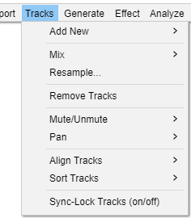

Tracks Menu
- Creating and removing tracks
- Applying operations to selected tracks such as mixing, resampling, converting from stereo to mono, aligning or muting
- 
Add New
The Add New submenu provides commands for adding stereo or mono tracks, label tracks and time tracks.
See Tracks Overview for details of the different kinds of tracks.
Mix
The Mix submenu provides commands for mixing and rendering your selected tracks to a singlestereo or mono track.
Resample...
Allows you to resample the selected track(s) to a new sample rate for use in the project, leaving the length (and hence playback speed and pitch) unchanged. To resample for export, change the Project Rate in Selection Toolbar.
Remove Tracks
Removes the selected track(s) from the project. Even if only part of a track is selected, the entire track is removed. You can also remove a track by clicking the in its upper left corner.
To remove only the selected audio in a track (without adding it to the clipboard) use or either Split Delete or Silence Audio at
Mute/Unmute
The Mute/Unmute submenu enables you to mute or unmute all of the tracks in your project in one go, without having to use the buttons and in each track's Track Control Panel.
Pan
The Pan submenu enables you to change the panning of all the tracks you have selected or partially selected, in one go, without having to use the Pan sliders in each track's Track Control Panel. The panning choices are extreme Left or Right pan or Center pan. If no tracks are selected, pan is changed in all tracks.
Align Tracks
The Align Tracks submenu provides a set of commands to help you align your selected tracks in various ways. In particular there are two very useful commands that enable you to align tracks end-to-end, one after the other, or align them all together.
Sort Tracks
The Sort Tracks submenu provides commands to sort your tracks by Track Names or the tracks' start times.
Sync-Lock Tracks (on/off)
The Sync-Lock Tracks feature ensures that length changes occurring anywhere in a defined group of tracks also take place in all audio or label tracks in that group, even if those tracks were not selected. This lets you keep existing audio or labels synchronized with each other, even when carrying out actions like inserting, deleting or changing speed or tempo. You can turn this feature "on" or "off" (default is unchecked "off") by clicking this menu item. See Sync-Locked Track Groups for more information.